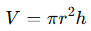
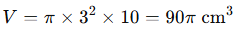

¿Qué es el perímetro?
Llamamos perímetro de un figura geométrica plana a la longitud de su contorno.
El perímetro es, por tanto, una medida de longitud, por lo que vendrá en centímetros, metros, pulgadas… en general, en unidades lineales.
Calcular perímetros de cualquier polígono
Vamos a presentar la primera estrategia para el cálculo de perímetros. No importa el número de lados que tenga el polígono.
El perímetro de una figura geométrica siempre puede calcularse sumando la longitud de cada uno de sus lados.
Para calcular el perímetro hay que sumar las longitudes de sus lados: 17cm + 15cm + 11cm = 43cm
Puedes utilizar esta estrategia para calcular el perímetro de cualquier polígono.
|
Calcular el perímetro de cuadrados La característica especial del cuadrado es que tiene sus cuatro lados iguales. Podemos aprovechar esto para simplificar nuestros cálculos. Puedes calcular el perímetro de este cuadrado sumando la longitud de cada uno de sus cuatro lados. Perímetro = 6cm + 6cm + 6cm + 6cm = 24cm Como los cuatro lados son iguales al multiplicar por cuatro la longitud del lado obtienes el mismo resultado. Perímetro = 4 x 6cm = 24cm Así, descubres una regla que te sirve para cualquier cuadrado. Perímetro del cuadrado = 4 x longitud lado |
Calcular el perímetro de rectángulos
En todos los rectángulos los lados opuestos son iguales, tiene lados que son iguales dos a dos.Para calcular el perímetro del rectángulo del ejemplo puedes sumar la longitud de sus lados, dos 6cm y dos de 4cm.
Perímetro = 6cm + 4cm + 6cm + 4cm = 20cm
Cualquier rectángulo tiene repetidos 2 veces los dos lados. Así que, al multiplicar por dos la suma de las longitudes de la base y la altura llegamos al mismo resultado.
Perímetro = 2x (6cm + 4cm) = 20cm
Entonces, tienes una regla para cualquier rectángulo.
Perímetro del rectángulo = 2 x (base + altura)
Calcular el perímetro de triángulos equiláteros
Igual que en los cuadrados, los lados de los triángulos equiláteros son iguales. Todos miden lo mismo.Cada lado mide 7cm y puedes calcular la longitud de su contorno de la siguiente manera.
Perímetro = 7cm + 7cm + 7cm = 21cm
O de una manera más fácil. Como los tres lados son iguales puedes multiplicar por tres la longitud del lado y el resultado no cambia.
Perímetro = 3 x 7cm = 21cm
Y esto sirve para cualquier triángulo equilátero.
Perímetro del triángulo equilátero = 3 x longitud lado
Calcular el perímetro de rombos
El rombo tiene sus cuatro lados iguales. Pero no todos sus ángulos son iguales, sólo los ángulos opuestos son iguales entre sí.Como los cuatro lados son iguales podemos multiplicar por cuatro la longitud del lado para obtener la medida del perímetro.
Perímetro = 4 x 5cm = 20cm
Esta regla es la misma que la de los cuadrados, porque también tienen sus cuatro lados iguales.
Perímetro del rombo = 4 x longitud lado
Calcular el perímetro del romboide
El perímetro del romboide es igual a la suma de las longitudes de sus cuatro lados.
Calcular el perímetro de triángulos isósceles
En los triángulos isósceles dos de sus lados son iguales y uno diferente.Para recordar los tipos de triángulos puedes visitar este post.
Como tiene dos lados iguales y uno diferente, para calcular el perímetro sólo tenemos que multiplicar por 2 la longitud del lado que se repite y sumarle la del lado diferente.
Perímetro = 5cm x 2 + 6cm = 16cm
Así, para cualquier triángulo isósceles:
Perímetro triángulo isósceles = longitud lado repetido x 2 + longitud lado diferente
Calcular el perímetro de cualquier polígono regular
El rasgo que define a los polígonos regulares es que todos sus lados tienen la misma longitud.Como el pentágono tiene cinco lados iguales, para hallar su perímetro se multiplica por cinco la longitud del lado.
Perímetro del pentágono = 5 x longitud lado
Y en el hexágono, que tiene seis lados iguales, multiplicas por seis la longitud de lado.
Perímetro del hexágono = 6 x longitud lado
De estos ejemplos podemos extraer una regla para calcular, de una manera sencilla, el perímetro de cualquier polígono regular.
Multiplicar el número de lados del polígono por la longitud del lado.
Perímetro de un polígono regular = nº lados x longitud lado
Perímetro de un círculo
El perímetro de un círculo es el doble del producto de π por el radio (r). También se puede calcular a partir del diámetro (D), siendo el producto de π y el diámetro.

El perímetro del círculo es una circunferencia.